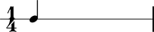
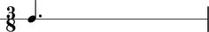
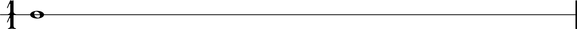

Duration token
Abjad notes, rests, chords, tuplets and other durated components accept duration input in a couple of different formats.
- Abjad
Rationalinstances - Python pairs
- Python int and long instances
For example:
abjad> note = Note(0, Rational(1, 4))
And:
abjad> note = Note(0, (3, 8))
And:
abjad> note = Note(0, 1)
The Abjad duration token generalizes these different types of input.
Examples in the documentation that ask for valid duration token input accept any of the types of input show here.
Abjad does not count the Python float among the valid types of duration token.